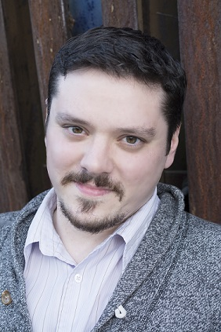

About
Hi, I'm Matt Bishop. This is my webpage where I share all of my favorite work, from web and software development to video art production. Check out the links below to view examples of my work! I hope to expand this webpage with portfolio pieces soon.
I currently attend PDX Code Guild, a programming and web development boot camp in Portland, OR.
Skills I'm developing in coding boot camp:
- Python
- HTML, CSS, Javascript
- Django
- SQL
Soft skills I have developed through education / work:
I have learned many invaluable skills over the course of my college and professional career. With over a decade and a half of experience in the service industry, I have honed numerous interpersonal skills rather adeptly.
- Communication - I am a proficient communicator. Whether I am managing staff or working within a group on a project or goal, I am able to assess need, express myself and listen to others.
- Teamwork - I have never worked in an environment where I wasn't part of a team. It is only through teamwork that expectations are established and goals met. I thrive in this environment!
- Adaptability - I am accustomed to high-stress situations that require deadlines to be met or time-sensitive actions to occur. But I also appreciate the value of planning and organizing and will afford as much time as needed to get the job done right.
- Problem Solving - As a programmer I am expected to, ultimately, solve problems and find solutions with code. However, I am well-versed in conflict resolution, maintaining good working relationships and offering solutions to problems people face in a work environment.
- Leadership - Through careful observation, empathy, warmth and open-mindedness, I often inspire others to do their best in a team-oriented environment!
I am more than happy to forward a resume if you are interested in learning more!